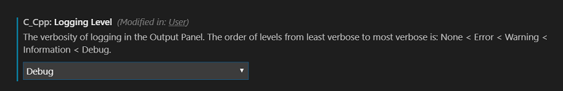
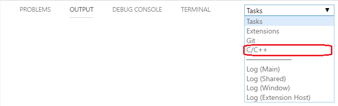

C/C++ extension logging
Logging information is available for the language server and the debug adapter. If you are experiencing a problem that we are unable to diagnose based on information in your issue report, we might ask you to enable logging and send us your logs.
Logging information is delivered directly to the Output panel for the language server and to the Debug Console for the debug adapter.
Enable logging for the language server
To turn on full logging for the language server, follow these steps:
Open the Command Palette and choose Preferences: Workspace settings.
Search for "logging" in the search box.
Find C_Cpp: Logging Level and change the level to Debug.

From the main menu, open the Output panel by choosing View > Output.
Select the C/C++ option in the log filter selector:

Enable logging for the debug adapter
Enabling logging for the debug adapter will show communication information between VS Code and our extension and between our extension and the debug adapter.
Logging configuration for the debug adapter is configured in launch.json.
Logging for LLDB-MI debuggers
The logging block for macOS LLDB-MI debuggers, along with its default configuration, is in launch.json:
"logging": {
"trace": false,
"traceResponse": false,
"engineLogging": false
}
VS Code and the CppTools extension
The logging here is called trace logging and can be enabled by setting trace and traceResponse to true in the logging block inside launch.json. This will help diagnose issues related to VS Code's communication to our extension and our responses.
CppTools extension and the debugger
The logging between CppTools and the debugger is called engineLogging. When using an MI debugger such as gdb or lldb, this will show the request, response, and events using the mi interpreter. This logging will help us determine whether the debugger is receiving the right commands and generating the correct responses.
Logging for Visual C++ debugger
The logging block for the Visual C++ debugger with its default configuration in launch.json is as follows:
"logging": {
"engineLogging": false
}
The Visual C++ debugger logging will show only the communication to and from VS Code as all communication to the debugger is done internally to the process and is not visible through logging.